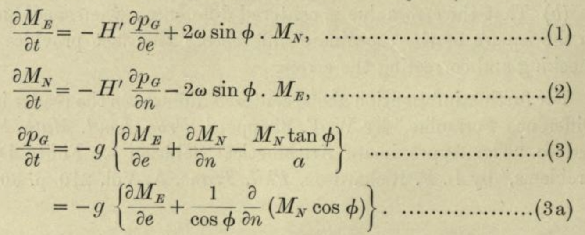

Chapter 2 Structure of a function
- [F-10] Recognize that functions are a way of representing (storing) what we know and be able to use properly the basic nomenclature of functions).
You’re used to mathematical functions being stated as formulas, expressions composed of addition, multiplication, square roots, and so on. The expression \(m x + b\) uses a multiplication and an addition. \(\sqrt{\strut 1 - x^2}\) uses exponentiation (\(x^2\)), subtraction and square root.
There’s nothing in the mathematical concept of “function” that requires a formula. And computer functions in general are not based on an algebraic formula. The word used to describe the internals of a computer function is algorithm, which is a generalization of “formula” that includes many non-arithmetic operations such as looping and branching.
2.1 Inputs to output
We will be using formulas extensively, but best if you can visualize functions generally as something that’s not necessarily a formula. This section gives another perspective on how to describe and think about a function. But remember, functions take inputs and return the corresponding output. Any arrangement that accomplishes this is a function, even if arithmetic is nowhere in sight.
A simple and useful framework for organizing what we know is the table, generally set up as an array of rows and columns. For instance, here is a table about a range of internal combustion engines of various sizes:
| Engine | mass | BHP | RPM | bore | stroke |
|---|---|---|---|---|---|
| Webra Speed 20 | 0.25 | 0.78 | 22000 | 16.5 | 16 |
| Enya 60-4C | 0.61 | 0.84 | 11800 | 24.0 | 22 |
| Honda 450 | 34.00 | 43.00 | 8500 | 70.0 | 58 |
| Jacobs R-775 | 229.00 | 225.00 | 2000 | 133.0 | 127 |
| Daimler-Benz 609 | 1400.00 | 2450.00 | 2800 | 165.0 | 180 |
| Daimler-Benz 613 | 1960.00 | 3120.00 | 2700 | 162.0 | 180 |
| Nordberg | 5260.00 | 3000.00 | 400 | 356.0 | 407 |
| Cooper-Bessemer V-250 | 13500.00 | 7250.00 | 330 | 457.0 | 508 |
Each row of the table reports on one, specific engine. Each column is one attribute of the of an engine. Using such tables can be easy. For example, if asked to report how fast the engine named “Enya 60-4C” spins, you would go down to the Enya 60-4C row and over to the “RPM” column and read off the answer: 11,800 revolutions per minute (RPM).
A table like this describes the general relationships between engine attributes. For instance, we might want to understand the relationship (if any) between RPM and engine mass, or relate the diameter (that is, “bore”) and depth (that is, “stroke”) of the cylinders to the power generated by the engine. Any single entry in the table doesn’t tell us about such general relationships; we need to consider the rows and columns as a whole.
If you examined the relationship between engine power (BHP) and bore, stroke, and RPM, you will find that (as a rule) the larger the bore, stroke, and RPM, the more powerful the engine. That’s a qualitative description of the relationship. Most educated people are able to understand such a quantitative description. Even if they don’t know exactly what “power” means, they have some rough conception of it.
Often, we’re interested in having a quantitative description of a relationship such as the one (bore, stroke, RPM) \(\rightarrow\) power. Remarkably, many otherwise well-educated people are uncomfortable with the idea of using quantitative descriptions of a relationship: what sort of language the description should be written with; how to perform the calculations to use the description; how to translate between data (such as in the table) and a quantitative description; how to translate the quantitative description to address a particular question or make a decision.
This course is about constructing and using such quantitative descriptions: that is, mathematical modeling. Skills for modeling are essential for work in engineering and science, and highly valued in many other fields in commerce, management, and government. Often, the work of applying such quantitative skills is called calculation. The name calculus is used to describe the methods that are widely used for undertaking calculations.
Functions are a fundamental way of organizing mathematical models and calculations. You have undoubtedly seen them in your previous mathematics education, but it’s worth reviewing them from the basics so that we can share a vocabulary for communicating about them.
- A function is a transformation from one or more inputs to an output.
- To keep things simple for now we’ll focus on inputs and outputs that are numeric, but later we’ll need a more nuanced view of “numeric” that takes into account the different kinds of things that are represented by numbers, e.g. length, power, RPM.
2.2 A bureaucratic analogy
You’ll have many opportunities to work with functions defined by formulas. Here, I want to emphasize that functions are really just a way of storing a correspondence of inputs to outputs and that formulas need have nothing to do with it except as one way of describing the pattern. Instead of a formula, imagine a long corridor with a sequence of offices, each identified by a room number. The input to the function is the room number. To evaluate the function for that input, you knock on the appropriate door and, in response, you’ll receive a piece of paper with a number to take away with you. That number is the output of the function.
This will sound at first too simple to be true, but … In a mathematical function each office gives out exactly the same number every time someone knocks on the door. Obviously, being a worker in such an office is highly tedious and requires no special skill. Every time someone knocks on the worker’s door, he or she writes down the same number on a piece of paper and hands it to the person knocking. What that person will do with the number is of absolutely no concern to the office worker.
The utility of such functions depends on the artistry and insight of the person who creates them: the modeler. An important point of this course is to teach you some of that artistry. Hopefully you will learn through that artistry to translate your insight to the creation of functions that are useful in your own work. But even if you just use functions created by others, knowing how functions are built will be helpful in using them properly.
In the sort of function just described, all the offices were along a single corridor. Such functions are said to have one input, or, equivalently, to be functions of one variable. To operate the function, you just need one number: the address of the office from which you’ll collect the output.
Many functions have more than one input: two, three, four, … tens, hundreds, thousands, millions, …. In this course, we’ll work mainly with functions of two inputs, but the skills you develop will be applicable to functions of more than two inputs.
What does a function of two inputs look like in our office metaphor? Imagine that the office building has many parallel corridors, each with a numeric ID. To evaluate the function, you need two numeric inputs: the number of the corridor and the number of the door along that corridor. With those two numbers in hand, you locate the appropriate door, knock on it and receive the output number in return.
Three inputs? Think of a building with many floors, each floor having many parallel corridors, each corridor having many offices in sequence. Now you need three numbers to identify a particular office: floor, corridor, and door.
Four inputs? A street with many three-input functions along it. Five inputs? A city with many parallel four-input streets. And on and on.
Applying inputs to a function in order to receive an output is only a small part of most calculations. Calculations are usually organized as algorithms, which is just to say that algorithms are descriptions of a calculation. The calculation itself is … a function!
How does the calculation work? Think of it as a business. People come to your business with one or more inputs. You take the inputs and, following a carefully designed protocol, hand them out to your staff, perhaps duplicating some or doing some simple arithmetic with them to create a new number. Thus equipped with the relevant numbers, each member of staff goes off to evaluate a particular function with those numbers. (That is, the staff member goes to the appropriate street, building, floor, corridor, and door, returning with the number provided at that office.) The staff re-assembles at your roadside stand, you do some sorting out of the numbers they have returned with, again following a strict protocol. Perhaps you combine the new numbers with the ones you were originally given as inputs. In any event, you send your staff out with their new instructions—each person’s instructions consist simply of a set of inputs which they head out to evaluate and return to you. At some point, perhaps after many such cycles, perhaps after just one, you are able to combine the numbers that you’ve assembled into a single result: a number that you return to the person who came to your business in the first place.
A calculation might involve just one function evaluation, or involve a chain of them that sends workers buzzing around the city and visiting other businesses that in turn activate their own staff who add to the urban tumult.
The reader familiar with floors and corridors and office doors may note that the addresses are discrete. That is, office 321 has offices 320 and 322 as neighbors. Calculus is about continuous functions, so we need a way to accept, say, 321.487… as an input. There is no such office.
A slight modification to the procedure will produce a continuous function. It works like this: for an input of 321.487… the messenger goes to both office 321 and 322 and collects their respective outputs. Let’s imagine that they are -14.3 and 12.5 respectively. All that’s needed is a small calculation, which in this case will look like \[-14.3 \times (1 - 0.487...) + 12.5 \times 0.487...\] This is called linear interpolation and lets us construct continuous functions out of discrete data.
In Blocks 2 and 5 we’ll discuss other widely used ways to do this that produce not just continuous functions but smooth functions. Understanding the difference between continuous and smooth will have to wait until we introduce a couple more calculus concepts: derivatives and limits.
2.3 Domain: input space
As you know, there is a powerful way of thinking about numbers in terms of space and geometry. For instance, a single number corresponds to a point on a line: the so-called number line. A pair of inputs, say, (x, y) corresponds to a point in a plane, often called the Cartesian coordinate plane. Three numbers corresponds to a point in space, perhaps organized into (x, y, z) of a Cartesian space. There are higher-dimensional spaces, but usually special training is needed to become comfortable with them. If you are having this discomfort, you might prefer to work with the office metaphor. Just for fun, here’s how you can think of a 10-dimensional space: 10 numbers, one telling you which planet, the next specifying the continent on that planet, and so on for country, state, city, street, building, floor, corridor, door.
The set of inputs with which the function can be evaluated is called the domain of the function. Sometimes we describe the domain as a space, e.g. the number line, the plane, and so on. Sometimes domains including more restrictions. For instance, a particular input might only meaningfully be positive, with no offices corresponding to negative values for that input. Or, an input might be restricted to be in the interval 0 to 1. Sometimes in calculus, the domain excludes an isolated point. For instance, there may be no office at the door marked 0 but the neighboring doors open into working offices.
2.4 Range: output space
The range of a function is the set of all the outputs that can be produced. Since at this stage we’re working only with functions that return a single number as output, it’s common to describe the range as all or part of the number line. For instance, some functions only have positive outputs. Other functions’ outputs are always in the interval 0 to 1. (This is the case, for instance, when the function returns a probability as the output.)
Consider this graph of a function \(g(x)\):

Question A What is the domain of \(g(x)\)?
- \(-\infty < x < \infty\) ☹︎
- \(-3 \leq x \leq 2\) ✓
- \(-4 \leq x \leq 4\) ☹︎ This might be called the “graphics” domain, yet the function graph doesn’t extend over that whole interval.
- $-10 g(x) ☹︎ This is the vertical extent of the graphics frame.
- \(-1 \leq g(x) \leq 33\) ☹︎ The domain refers to the horizontal axis.
Question B What is the range of \(g(x)\)?
- \(-\infty < x < \infty\) ☹︎ The range refers output of the function. \(x\) is the input.
- \(-3 \leq x \leq 2\) ☹︎ The range refers output of the function. \(x\) is the input.
- \(-4 \leq y \leq 4\) ☹︎ You’re used to calling the function output \(y\), but that’s a bad habit. Break it!
- $-10 g(x) ☹︎ This is the vertical extent of the graphics frame.
- \(-1 \leq g(x) \leq 33\) ✓
Weather forecasting by numerical process
Weather forecasting by numerical process is a highly influential book, from 1922, by Lewis Fry Richardson. He envisioned a calculation for a weather forecast as a kind of function. The domain for the forecast is the latitude and longitude of a point on the globe, rather than the rectilinear organization of corridor.
One fantastic illustration of the idea shows a building constructed in the form of an inside-out globe. At each of many points on the globe, there is a business. (You can see this most clearly in the foreground, which shows several boxes of workers.)
](www/Richardson-globe.jpg)
Figure 2.1: An artist’s depiction of the organization of calculations for weather forecasting by Richardson’s system. Source
Each business might work this way: In each business there is a person who will report the current air pressure at that point on the globe, another person who reports the temperature, another reporting humidity, and so on. To compute the predicted weather for the next day, the business has a staff assigned to visit the neighboring businesses to find out the pressure, temperature, humidity, etc. Still other staffers take the collected output from the neighbors and carry out the arithmetic to translate those outputs into the forecast for tomorrow. For instance, knowing the pressure at neighboring points enables the direction of wind to be calculated, thus the humidity and temperature of air coming in to and out of the region the business handles. In today’s numerical weather prediction models, the globe is divided very finely by latitude, longitude, and altitude, and software handles both the storage of present conditions and the calculation from that of the future a few minutes later. Repeating the process using the forecast enables a prediction to be made for a few minutes after that, and so on.
Some of the most important concepts in calculus relate to the process of collecting outputs from neighboring points and combining them: for instance finding the difference or the sum. To illustrate, here is the first set of equations from Richardson’s Weather forecasting … written in the notation of calculus:

You can hardly be expected at this point to understand the calculations described by these equations, which involve the physics of air flow, the coriolis force, etc. but it’s worth pointing out some of the notation:
- The equations are about the momentum of a column of air at a particular latitude (\(\phi\)) and longitude.
- \(M_E\) and \(M_N\) are east-west and north-south components of that momentum.
- \(\partial M_E /\partial t\) is the amount the east-west momentum will change in the next small interval of time (\(\partial t\)).
- \(p_G\) is the air pressure at ground level from that column of air.
- \(\partial p_G / \partial n\) is about the difference between air pressure in the column of air and the columns to the north and south.
Calculus provides both the notation for describing the physics of climate and the means to translate this physics into arithmetic calculation.